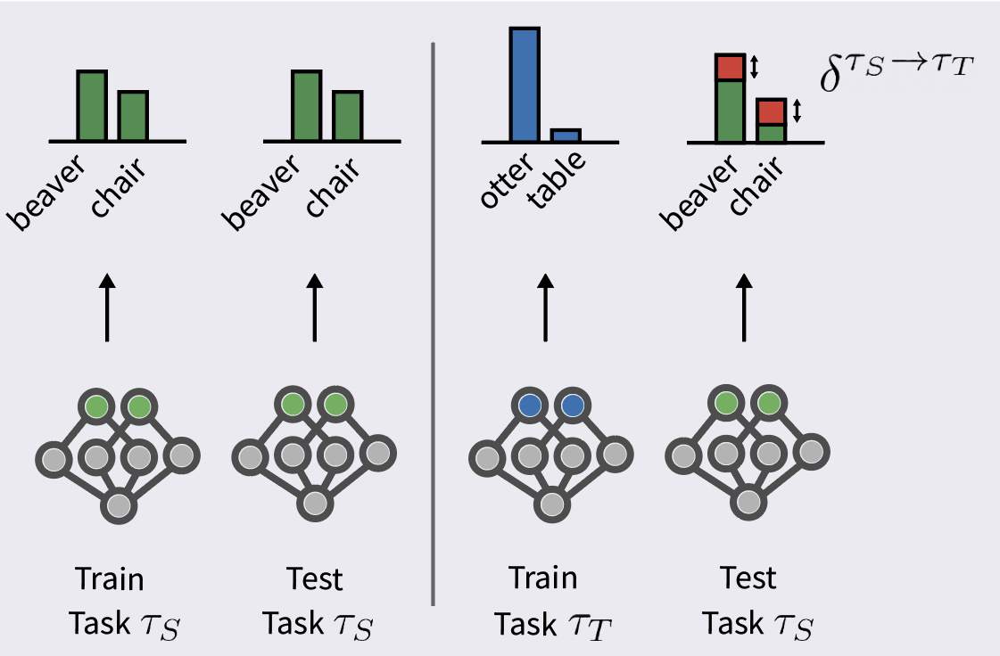

A Theoretical Analysis of Catastrophic Forgetting through the NTK Overlap Matrix
Introduction
Neural networks have achieved near optimal performance for supervised learning tasks.However when facing a sequence of tasks where data distribution is changing over time, they tend to forget what has been learned in the past leading to Catastrophic Forgetting (CF). This is one critical problem Continual Learning (CL) aims to solve. Although, there has been plenty of empirical works trying to study that pathology, very few tackled it from a theoretical side. In this work, we provide a theoretical analysis of CF under the Neural Tangent Kernel (NTK) regime where neural networks behave linearly. (Link to the original NTK paper by Jacot et al., for the most curious of you. I also find this blog explaining the concept quite well ).
Background
Continual Learning considers a sequence of task $\tau_1,\tau_2,...,\tau_T, T \in \mathbb{N}^{*}$ where each task is a supervised learning problem independent from each other. The goal is to train a predictor that has the best accuracy on each task assuming previous data are no longer available. Let's denote $f_{\tau}^{\star}$ the function learned after training on task $\tau$. Under the NTK framework, following Bennani et al. a closed-form expression for the solution after training on task $\tau$ is:
$$\begin{align}
f_{\tau}^{\star}(x)=f_{\tau-1}^{\star}(x)+ \langle \nabla_{\omega}f_{0}(x), \omega_{\tau}^{\star}-\omega_{\tau-1}^{\star} \rangle
\end{align}
$$
Where $\nabla_{\omega}f_{0}(x) \in \mathbb{R}^{p}$ ($p$ being the number of parameters) is the NTK (also called the feature map $\phi(x)$).
Re-writting this expression between a source $\tau_S$ and target $\tau_T$ task (i.e the target task occurs after the source task: $S < T$) , we get:
$$\begin{align}
f_{\tau_T}^{\star}(x)&=f_{\tau_{T-1}}^{\star}(x)+ \langle \nabla_{\omega}f_{0}(x), \omega_{\tau_T}^{\star}-\omega_{\tau_{T-1}}^{\star} \rangle \\
&=\underbrace{f_{\tau_{T-2}}^{\star}(x)+\langle \nabla_{\omega}f_{0}(x), \omega_{\tau_{T-1}}^{\star}-\omega_{\tau_{T-2}}^{\star} \rangle}_{f_{\tau_{T-1}}^{\star}(x)} + \langle \nabla_{\omega}f_{0}(x),\omega_{\tau_T}^{\star} - \omega_{\tau_{T-1}}^{\star} \rangle \\
&=f_{\tau_{T-2}}^{\star}(x)+ \langle \nabla_{\omega}f_{0}(x), \omega_{\tau_T}^{\star}-\omega_{\tau_{T-2}}^{\star} \rangle \\
&= \underbrace{f_{\tau_S}^{\star}(x)}_{\text{solution } \\ \text{of task } \tau_S}+ \underbrace{\langle \phi(x), \omega_{\tau_T}^{\star}-\omega_{\tau_S}^{\star} \rangle}_{\delta^{\tau_S \rightarrow \tau_T}(x) \text{: variation } \\ \text{ hapening after task } \tau_S} \quad (\text{Expanding recursively } f_{\tau_{T-2}}^{\star}(x))
\end{align}
$$
 After training on task $\tau_T$, solution of task $\tau_S$ incurs a change (in red) in the predictions for beaver and chair classes (from former task $\tau_S$).
We are now ready to define the Catastrophic Forgetting.
Defining Catastrophic Forgetting
The vanilla case (SGD)
Equation (5) gives an intuitive interpretation of how forgetting happens. The solution of task $\tau_T$ can be decomposed in two terms: the solution of task $\tau_S$ and a term accounting for variation in $f$ due to training on task $\tau_T$. The latter is called the drift and characterizes the "forgetting". Since we are only interested in the absolute magnitude of the change we define the CF as the square of the drift:
$ \color{red}{\Delta^{\tau_S \rightarrow \tau_T}(X^{\tau_S}) =\left\lVert \delta^{\tau_S \rightarrow \tau_T}(X^{\tau_S}) \right\rVert_{2}^{2}}$.
After some algebra, we get an interesting upper bound for the CF:
$$\begin{align}
\Delta^{\tau_S \rightarrow \tau_T}(X^{\tau_S})\leq \sigma_{\tau_S,1}^{2}\sum_{k=\tau_S+1}^{\tau_T} \left\lVert \underbrace{V_{\tau_S}^{\top}V_{k}}_{O^{\tau_S \rightarrow k}_{SGD}} \underbrace{\Sigma_{k}[\Sigma_{k}^{2}+\lambda I]^{-1}U_{k}^{\top}}_{M_{k}}\tilde{y}_{k} \right\rVert_{2}^{2}
\end{align}
$$
For those interested in the derivation:
Let $X^{\tau_S} \in \mathbb{R}^{n_{\tau_S} \times p}$ be the matrix representing the dataset $\tau_S$ then the CF of task $\tau_S$ up until task $\tau_T$ is given by:
$$\begin{align}
\Delta^{\tau_S \rightarrow \tau_T}(X^{\tau_S}) &=\left\lVert \delta^{\tau_S \rightarrow \tau_T}(X^{\tau_S}) \right\rVert_{2}^{2} \\
&=\left\lVert \phi(X^{\tau_S})(\omega_{\tau_T}^{\star}-\omega_{\tau_S}^{\star}) \right\rVert_{2}^{2} \\
&=\left\lVert \phi(X^{\tau_S})(\omega_{\tau_T}^{\star}+\underbrace{\omega_{\tau_{T-1}}^{\star}-\omega_{\tau_{T-1}}^{\star}}_{=0}-\omega_{\tau_S}^{\star}) \right\rVert_{2}^{2} \\
&= \left\lVert \sum_{k=\tau_S+1}^{\tau_T} \phi(X^{\tau_S})(\omega_{k}^{\star}-\omega_{k-1}^{\star}) \right\rVert_{2}^{2} \quad (\text{telescopic sum})
\end{align}
$$
Following Thm. 1 of Bennani et al. $(\omega_{k}^{\star}-\omega_{k-1}^{\star})$ has a nice closed form solution:
$$\begin{align}
\omega_{k}^{\star}-\omega_{k-1}^{\star}=\phi(X^{k})^{\top}[\phi(X^{k})\phi(X^{k})^{\top}+\lambda I]^{-1}\tilde{y}_{k}
\end{align}
$$
with $\lambda>0$ being the weight decay regularizer and $\tilde{y}_{k}$ the residual after training on task $k-1$ defined as: $\tilde{y}_{k}=y_{k}-f_{k-1}^{\star}(x)$.
Plugging (11) into equation (10), gives us the CF for task $\tau_S$ up until task $\tau_T$:
$$\begin{align}
\Delta^{\tau_S \rightarrow \tau_T}(X^{\tau_S})=\left\lVert \sum_{k=\tau_S+1}^{\tau_T} \phi(X^{\tau_S})\phi(X^{k})^{\top}[\phi(X^{k})\phi(X^{k})^{\top}+\lambda I]^{-1}\tilde{y}_{k} \right\rVert_{2}^{2}
\end{align}
$$
I admit it, the last expression is not very intuitive. To disentangle this, we will use the Singular Value Decomposition (SVD) of $\phi(X^{\tau})=U_{\tau}\Sigma_{\tau}V_{\tau}^{\top}$ to get a more interpretable form:
$$
\begin{align}
\Delta^{\tau_S \rightarrow \tau_T}(X^{\tau_S})&=\left\lVert \sum_{k=\tau_S+1}^{\tau_T} U_{\tau_S}\Sigma_{\tau_S}V_{\tau_S}^{\top}V_{k}\Sigma_{k}[\Sigma_{k}^{2}+\lambda I]^{-1}U_{k}^{\top}\tilde{y}_{k} \right\rVert_{2}^{2} \\
&\leq \sum_{k=\tau_S+1}^{\tau_T} \left\lVert U_{\tau_S}\Sigma_{\tau_S}V_{\tau_S}^{\top}V_{k}\Sigma_{k}[\Sigma_{k}^{2}+\lambda I]^{-1}U_{k}^{\top}\tilde{y}_{k} \right\rVert_{2}^{2} \quad \quad \left\lVert \sum . \right\rVert_{2}^{2} \leq \sum \left\lVert . \right\rVert_{2}^{2} \\
&\leq \sigma_{\tau_S,1}^{2}\sum_{k=\tau_S+1}^{\tau_T} \left\lVert \underbrace{V_{\tau_S}^{\top}V_{k}}_{O^{\tau_S \rightarrow k}_{SGD}} \underbrace{\Sigma_{k}[\Sigma_{k}^{2}+\lambda I]^{-1}U_{k}^{\top}}_{M_{k}}\tilde{y}_{k} \right\rVert_{2}^{2} \quad (\text{Assuming WLOG that } \Sigma_{\tau_S} \text{ has its eigenvalues in decreasing order})
\end{align}
$$
Here we go, the quantity at the core of the CF is $O^{\tau_S \rightarrow k}_{SGD}$: the NTK overlap matrix.
Let us now get an intuition of this quantity.
How is the NTK overlap matrix impacting the forgetting?
$V_{k} \in \mathbb{R}^{n_{k} \times p}$ contains the $n_k$ eigenvectors of $\phi(X^{k})$, $\forall k \in [T]$. For the sake of understanding, let us suppose that subspaces $\tau_S$ and $k$ are spanned by one unique vector.
Then $O^{\tau_S \rightarrow k}_{SGD}=\bf{v_{\tau_S}^{\top}v_{k}} \in \mathbb{R}$ is nothing but the dot product of these vectors (illustrated below). Because $v_{\tau_S}$ and $v_{k}$ are normalized, $O^{\tau_S \rightarrow k}_{SGD}$ gives directly the cosine between their angle. In other words, $O^{\tau_S \rightarrow k}_{SGD}$ is a measure of task similarity (between task $\tau_S$ and $k$). The more two tasks are similar the lower will be the angle between their vectors (and higher will be the cosine). This means that any update on a target task $\tau_T$ will have high impact on a source task $\tau_S$ if they are similar.
Less forgetting is incurred when the source task $\tau_S$ have little overlap with the target task $\tau_T$ (left). On the other hand, when the source and target task are very similar, CF is likely to occur (right).
In practice, it is not possible to control the similarity between the source and target tasks since we have no leverage on the stream of data arriving. However, one possibility is to operate in the subspace orthogonal to the previous tasks subspace to reduce CF.
Mitigating CF with orthogonal projection methods
One way to allieviate CF is to project the SGD update orthogonally to the features maps $\phi(X^{\tau}), \tau \in [T]$.
(For the most curious of you)
Let us suppose, we are training on task $\tau_T$, if we project each SGD update $(\omega_{T}(t)-\omega_{T-1}^{\star})$ orthogonally to the features maps $\phi(X^{\tau_{T-1}})$ then we have theoretically no forgetting in the infinite memory case. To see this, let $x^{\tau_{T-1}}$ be a sample of dataset $X^{\tau_{T-1}}$:
$$\begin{align}
\quad f_{\tau_T}^{\star}(x^{\tau_{T-1}})&=f_{\tau_{T-1}}^{\star}(x^{\tau_{T-1}})+ \langle \nabla_{\omega}f_{0}(x^{\tau_{T-1}}) , \omega_{\tau_T}^{\star}-\omega_{\tau_{T-1}}^{\star} \rangle \quad (\text{From Equation (5)}) \\
&=f_{\tau_{T-1}}^{\star}(x^{\tau_{T-1}})+ \underbrace{\langle \phi(x^{\tau_{T-1}}) , \omega_{\tau_T}^{\star}-\omega_{\tau_{T-1}}^{\star} \rangle}_{=0} \quad (\text{by definition of orthogonal projection})\\
&=f_{\tau_{T-1}}^{\star}(x^{\tau_{T-1}})
\end{align}
$$
There is no forgetting since the prediction for $x^{\tau_{T-1}}$ has not changed. The same logic can be applied to demonstrate no forgetting for $x^{k}$, $k<\tau_{T-1}$.
Note that this condition implies that we are storing in memory all the samples of dataset $X^{\tau_{T-1}}$ to project against which is not realistic. In practice, we store a limited amount of samples $x^{k}$ in a buffer for each task.
Projection based methods aim to reduce Catastrophic Forgetting by projecting the SGD update orthogonally to elements from the buffer memory. The higher the memory size the lower forgetting is incurred. This can also be seen as projecting the source and target task subspace in a common subspace called the residual subspace. The hope is that if the residual subspace has very few overlap with the two subspaces, there will be small forgetting.
Among the methods we will be examining: GEM (Gradient Episodic Memory), OGD (Orthogonal Gradient Descent) and PCA-OGD. GEM (respectively OGD) projects orthogonally to the loss function gradient $\nabla_{\omega}\mathcal{L}(x)$ (respectively to the function output gradient $\nabla_{\omega}f(x)$). PCA-OGD extends OGD by compressing the information of $\nabla_{\omega}f(x)$ (through PCA) and projects orthogonally to its top eigenvectors.
Unlike SGD, the projection methods reduce the forgetting by projecting the source and target tasks on a residual subspace.
Experiments
Let us now illustrate the previous theoretical results in the Rotated MNIST dataset. This is the MNIST dataset (10 handwritten digits to classify from 0 to 9) where new tasks corresponds to a fixed rotation of each digit by a fixed angle.
We first check that lower eigenvalues of the NTK overlap matrix induce less forgetting. Indeed eigenvalues corresponds the cosine of the angle between the two subspace considered. Lower cosine (lower eigenvalues) induces less forgetting. This is confirmed in the left figure where lower eigenvalues induces less drop in performance and fewer forgetting. Also, note that PCA-OGD constantly shows lower drop in performance than its counterpart OGD.
We next compare the eigenvalues of the overlap matrix (right) for different methods: SGD, OGD, GEM-NT and PCA-OGD for two different memory size. As expected, PCA-OGD has lower eigenvalues since it can leverage structure in the data compared to GEM-NT and OGD which have roughly similar eigenvalues. Note that unsurprisingly, SGD has the largest eigenvalues since it directly project the source task on the target task. Finally, higher memory induces lower eigenvalues since we are projecting orthogonally against a higher number of vectors.
Drop in performance with respect to eigenvalues of the NTK overlap matrix (left). Spectrum of the eigenvalues for different methods considered with increasing memory size (right).
Now that we have supported our theoretical findings on the NTK overlap matrix, let us see how it translates into general performance.
We first highlight the sample efficiency of PCA-OGD over OGD on Rotated MNIST dataset for an increasing memory size (left). Overall PCA-OGD has better performance than OGD and most importantly it needs twice less memory than its counterpart, i.e compare OGD (200) with PCA (100). This shows how PCA-OGD efficiently compresses the information in the data and uses it to reduce CF.
Next, we test these methods on various benchmark datasets. For computational convenience, we ran A-GEM instead of GEM which has been shown to run faster without losing much performance. In general, PCA-OGD has decent results compared to A-GEM and performs very well on Split CIFAR. On Rotated and Permuted MNIST, A-GEM has better results than PCA-OGD while the opposite happens for Split CIFAR and Split MNIST. The underlying reason is that our theory relies on the constant NTK assumption which does not always hold: the dataset size of Rotated and Permuted MNIST is much larger than Split CIFAR which might violate the former assumption (Read Section 7.10 to know more about this).
Performance comparison between OGD and PCA-OGD for different memory size on Rotated MNIST (left). General performance of all methods on datasets considered (right).
We saw how PCA-OGD can leverage efficiently structure in the dataset to reduce CF. But there exists some datasets where there is no patterns then PCA-OGD is comparable to OGD
More to see
Let us know examine a dataset where there is no pattern : Permuted MNIST. Each task is an MNIST task where a fixed and uniform permutation is applied. This has
the particularity of removing any extra-task correlations and patterns.
Because there is no pattern in Permuted MNIST (left), one needs to keep more components that other benchmark (Rotated MNSIT, Split CIFAR) in order to explain the variance of the dataset. For instance, $50$ components (x label) only explains $53.3 \%$ of the variance while it explains respectively $81\%$ and $72\%$ for Rotated MNIST and Split CIFAR.
As a consequence, we can see that capturing the top directions of variation (eigenvectors) like PCA-OGD is not beneficial anymore performance-wise (right). PCA-OGD has also sensitively same eigenvalues than OGD (middle).
Performance comparison between OGD and PCA-OGD for different memory size on Rotated MNIST (left). General performance of all methods on datasets considered (right).
Interestingly, we saw a counter-example case with no structure where compressing information does not help much. Such situation, although fitting the definition of Continual Learning, is not realistic as most real-life dataset have structure and patterns.
Conclusion
In this paper, we provided a theoretical analysis of the Catastrophic Forgetting for Continual Learning under the NTK framework. We showed that it highly depends on the eigenvalues of the introduced NTK overlap matrix. If you would like to know more, full paper can be found here: [PDF]
Acknowledgements
I would like to thank (alphabetical order): Andy Huang, Bogdan Mazoure, Eric Crawford and Guillaume Rabusseau for useful feedbacks and discussions.
To cite:
@article{doan2020theoretical,
title={A Theoretical Analysis of Catastrophic Forgetting through the NTK Overlap Matrix},
author={Doan, Thang and Bennani, Mehdi and Mazoure, Bogdan and Rabusseau, Guillaume and Alquier, Pierre},
journal={arXiv preprint arXiv:2010.04003},
year={2020}
}